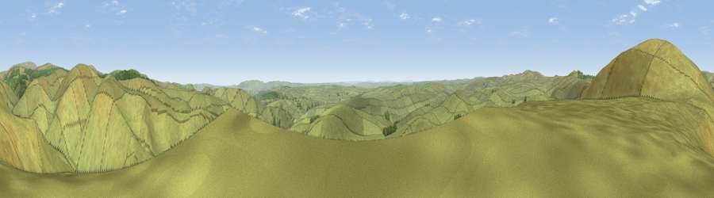

Viewpoint c12176_7755
#6281 in England · top 22% of its area beats it · —The view, rendered

A 360° render of this exact spot computed from the terrain model, tree cover and land cover — summer colours, afternoon light, calibrated against photographs of famous viewpoints. Real trees, hedges and buildings will differ in detail.
The panorama
Grey silhouette: terrain skyline in each direction (720 bearings, Earth curvature and refraction included). Dashed green: skyline with trees (+15 m) and buildings (+8 m) as obstacles. Blue strip: how far the ground is visible on each bearing.
Where the view opens
Wedge length = distance to the farthest visible ground on that bearing (vegetation-aware). Rings at 10, 25 and 50 km.
What fills the view
98% grassland · 2% woodland
Angular shares of the visible panorama (visual magnitude), not map area. Landscape diversity 0.05 (0–1 Shannon).
Key numbers
More beautiful places nearby
The staircase of upgrades: each row has a higher view potential than everything closer. Driving times are estimates from straight-line distance, calibrated against real road routing — check an actual route before setting out.
| Place | Direction | Drive | Score |
|---|---|---|---|
| Viewpoint c12187_7739 | NW · 1 km | ~3 min | 71.0 |
| Viewpoint c12193_7745 | NNW · 1 km | ~3 min | 74.3 |
| Viewpoint c12159_7825 | ESE · 4 km | ~8 min | 75.2 |
| Viewpoint near Netherton | E · 6 km | ~13 min | 75.4 |
| Windy Gyle | NNW · 7 km | ~14 min | 79.7 |
| Wether Cairn [Wholhope Hill] | ENE · 7 km | ~14 min | 80.7 |
| Viewpoint c12273_7856 | NE · 7 km | ~14 min | 83.7 |
| Viewpoint c12396_7887 | NNE · 13 km | ~24 min | 85.7 |
55.37337, -2.19484 · source: screening · position refined by local search. Computed location — check access rights before visiting.